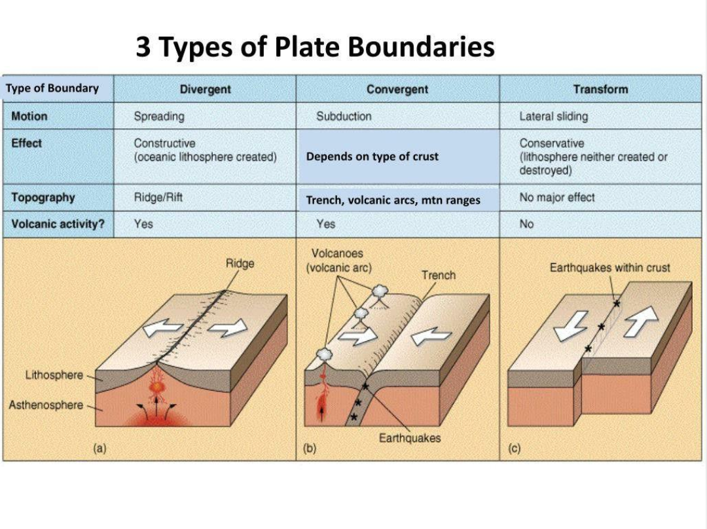

Divergentes
Dos placas se separan. El material caliente del manto asciende y puede solidificarse, formando nueva corteza.
Ejemplo: la dorsal mesoatlántica,
que atraviesa el océano Atlántico.
Las placas tectónicas forman una estructura global en constante movimiento. En sus límites, la litosfera se separa, colisiona o se desliza, dando origen a algunos de los procesos geológicos más importantes del planeta.

Las placas no están unidas de manera inmóvil. Sus bordes son zonas donde se concentra buena parte de la actividad sísmica y volcánica. Según la dirección de su movimiento, los límites se clasifican en tres tipos principales.
Dos placas se separan. El material caliente del manto asciende y puede solidificarse, formando nueva corteza.
Dos placas se aproximan. Una puede hundirse bajo la otra, o ambas pueden colisionar y elevar grandes cordilleras.
Dos placas se deslizan lateralmente. La fricción puede acumular tensión que se libera en forma de terremotos.
No todas las colisiones entre placas producen el mismo resultado. El proceso depende de su composición, densidad y dirección de movimiento.
En la subducción, una placa, generalmente oceánica, desciende por debajo de otra y se introduce en el manto. Este proceso puede generar terremotos, fosas oceánicas y volcanes.
Si dos masas continentales convergen, ninguna se hunde fácilmente por completo debido a su flotabilidad. La corteza se comprime, se pliega y puede elevar enormes montañas.
El movimiento de las placas suele ser de unos pocos centímetros por año. Aunque parezca lento, a lo largo de millones de años puede modificar la posición de los continentes, abrir océanos y formar cordilleras.
La tensión acumulada en las rocas puede liberarse repentinamente cuando una falla se desplaza, produciendo ondas sísmicas.
En las zonas de subducción y en muchos límites divergentes, el magma puede ascender hasta la superficie y alimentar volcanes.
La colisión de placas puede elevar cordilleras, mientras que su separación puede crear nuevas cuencas oceánicas a lo largo del tiempo geológico.